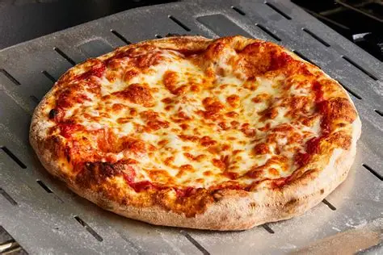

PIZZA

Description
The four cheese pizza, or "quattro formaggi", is a delicious Italian classic. It blends four different cheeses to create a rich, creamy, and savory experience.
Perfect for cheese lovers, it combines the flavor profiles of soft, sharp, and gooey cheeses on a crispy thin crust base.
Ingredients
- Pizza dough
- 1/2 cup mozzarella cheese
- 1/2 cup gorgonzola cheese
- 1/2 cup parmesan cheese
- 1/2 cup fontina cheese
- Tomato sauce (optional)
- Oregano and olive oil
Steps
- Preheat oven to 220°C (425°F).
- Roll out the pizza dough on a baking sheet or pizza stone.
- (Optional) Spread a thin layer of tomato sauce on the base.
- Sprinkle the four cheeses evenly over the dough.
- Drizzle with olive oil and sprinkle with oregano.
- Bake for 12–15 minutes until the crust is golden and the cheese is melted.
- Let it cool slightly before slicing and serving.